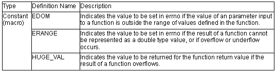
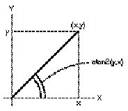

<math.h>
Performs various mathematical operations.
The followings are all implementation-defined.

Operation in the event of an error is described below.
(1) Domain error
A domain error occurs if the value of a parameter input to a function is outside the domain over which the mathematical function is defined. In this case, the value of EDOM is set in errno. The function return value depends on the compiler; see the user's manual for details.
(2) Range error
A range error occurs if the result of a function cannot be represented as a double type value. In this case, the value of ERANGE is set in errno. If the result overflows, the function returns the value of HUGE_VAL, with the same sign as the correct value of the function. If the result underflows, 0 is returned as the return value.
Note
(1) If there is a possibility of a domain error resulting from a <math.h> function call, it is dangerous to use the resultant value directly. The value of errno should always be checked before using the result in such cases.
Example:
.
.
.
1 x=asin(a);
2 if (errno==EDOM)
3 printf ("error\n");
4 else
5 printf ("result is : %lf\n", x);
.
.
.
In line 1, the arc sine value is found using the asin function. If the value of parameter a is outside the domain of the asin function [–1.0, 1.0], the EDOM value is set in errno. Line 2 determines whether a domain error has occurred. If a domain error has occurred, error is output in line 3. If there is no domain error, the arc sine value is output in line 5.
(2) Whether or not a range error occurs depends on the floating-point number internal representation format determined by the compiler. For example, if an internal representation format that allows infinity to be represented as a value is used, <math.h> library functions can be implemented without causing range errors.
double acos(double d)
Description: Computes the arc cosine of a floating-point number.
Header file: <math.h>
Return values: Normal: Arc cosine of d
Abnormal: In case of domain error: Returns not-a-number.
Parameters: d Floating-point number for which arc cosine is to be found
Example: #include <math.h>
double d, ret;
ret=acos(d);
Error conditions:
A domain error occurs for a value of d not in the range [–1.0, +1.0].
Remarks: The acos function returns the arc cosine in the range [0, p] radians.
double asin(double d)
Description: Computes the arc sine of a floating-point number.
Header file: <math.h>
Return values: Normal: Arc sine of d
Abnormal: In case of domain error: Returns not-a-number.
Parameters: d Floating-point number for which arc sine is to be found
Example: #include <math.h>
double d, ret;
ret=asin(d);
Error conditions:
A domain error occurs for a value of d not in the range [–1.0, +1.0].
Remarks: The asin function returns the arc sine in the range [–p/2, +p/2] radians.
double atan(double d)
Description: Computes the arc tangent of a floating-point number.
Header file: <math.h>
Return values: Arc tangent of d
Parameters: d Floating-point number for which arc tangent is to be found
Example: #include <math.h>
double d, ret;
ret=atan(d);
Remarks: The atan function returns the arc tangent in the range (–p/2, +p/2) radians.
double atan2(double y, double x)
Description: Computes the arc tangent of the result of division between two floating-point numbers.
Header file: <math.h>
Return values: Normal: Arc tangent value when y is divided by x.
Abnormal: In case of domain error: Returns not-a-number.
Parameters: x Divisor
y Dividend
Example: #include <math.h>
double x, y, ret;
ret=atan2(y, x);
Error conditions:
A domain error occurs if the values of both x and y are 0.0.
Remarks: The atan2 function returns the arc tangent in the range (–p, +p] radians. The meaning of the atan2 function is illustrated in figure 10.5. As shown in the figure, the result of the atan2 function is the angle between a straight line passing through the origin and point (x, y), and the X-axis.
If y = 0.0 and x is negative, the result is p. If x = 0.0, the result is ±p/2, depending on whether y is positive or negative.

Figure Meaning of atan2 Function
double cos(double d)
Description: Computes the cosine of a floating-point radian value.
Header file: <math.h>
Return values: Cosine of d
Parameters: d Radian value for which cosine is to be found
Example: #include <math.h>
double d, ret;
ret=cos(d);
double sin(double d)
Description: Computes the sine of a floating-point radian value.
Header file: <math.h>
Return values: Sine of d
Parameters: d Radian value for which sine is to be found
Example: #include <math.h>
double d, ret;
ret=sin(d);
double tan(double d)
Description: Computes the tangent of a floating-point radian value.
Header file: <math.h>
Return values: Tangent of d
Parameters: d Radian value for which tangent is to be found
Example: #include <math.h>
double d, ret;
ret=tan(d);
double cosh(double d)
Description: Computes the hyperbolic cosine of a floating-point number.
Header file: <math.h>
Return values: Hyperbolic cosine of d
Parameters: d Floating-point number for which hyperbolic cosine is to be found
Example: #include <math.h>
double d, ret;
ret=cosh(d);
double sinh(double d)
Description: Computes the hyperbolic sine of a floating-point number.
Header file: <math.h>
Return values: Hyperbolic sine of d
Parameters: d Floating-point number for which hyperbolic sine is to be found
Example: #include <math.h>
double d, ret;
ret=sinh(d);
double tanh(double d)
Description: Computes the hyperbolic tangent of a floating-point number.
Header file: <math.h>
Return values: Hyperbolic tangent of d
Parameters: d Floating-point number for which hyperbolic tangent is to be found
Example: #include <math.h>
double d, ret;
ret=tanh(d);
double exp(double d)
Description: Computes the exponential function of a floating-point number.
Header file: <math.h>
Return values: Exponential value of d
Parameters: d Floating-point number for which exponential function is to be found
Example: #include <math.h>
double d, ret;
ret=exp(d);
double frexp(double value, double ret)
Description: Breaks a floating-point number into a [0.5, 1.0) value and a power of 2.
Header file: <math.h>
Return values: If value is 0.0: 0.0If value is not 0.0: Value of ret defined by ret * 2*e = value
Parameters: value Floating-point number to be broken into a [0.5, 1.0) value and a power of 2
e Pointer to storage area that holds power-of-2 value
Example: #include <math.h>
double ret, value;
int *e;
ret=frexp(value, e);
Remarks: The frexp function breaks value into a [0.5, 1.0) value and a power of 2. It stores the resultant power-of-2 value in the area pointed to by e.
The frexp function returns the return value ret in the range [0.5, 1.0] or as 0.0.
If value is 0.0, the contents of the int storage area pointed to by e and the value of ret are both 0.0.
double ldexp(double ret, int f)
Description: Multiplies a floating-point number by a power of 2.
Header file: <math.h>
Return values: Result of e * 2f operation
Parameters: e Floating-point number to be multiplied by a power of 2f Power-of-2 value
Example: #include <math.h>
double ret, e;
int f;
ret=ldexp(e, f);
double log(double d)
Description: Computes the natural logarithm of a floating-point number.
Header file: <math.h>
Return values: Normal: Natural logarithm of dAbnormal: In case of domain error: Returns not-a-number.
Parameters: d Floating-point number for which natural logarithm is to be found
Example: #include <math.h>
double d, ret;
ret=log(d);
Error conditions:A domain error occurs if d is negative.A range error occurs if d is 0.0.
double log10(double d)
Description: Computes the base-ten logarithm of a floating-point number.
Header file: <math.h>
Return values: Normal: Base-ten logarithm of dAbnormal: In case of domain error: Returns not-a-number.
Parameters: d Floating-point number for which base-ten logarithm is to be found
Example: #include <math.h>
double d, ret;
ret=log10(d);
Error conditions:A domain error occurs if d is negative.A range error occurs if d is 0.0.
double modf(double a, double*b)
Description: Breaks a floating-point number into integral and fractional parts.
Header file: <math.h>
Return values: Fractional part of a
Parameters: a Floating-point number to be broken into integral and fractional partsb Pointer indicating storage area that stores integral part
Example: #include <math.h>
double a, *b, ret;
ret=modf(a, b);
double pow(double x, double y)
Description: Computes a floating-point number raised to a power.
Header file: <math.h>
Return values: Normal: Value of x raised to the power yAbnormal: In case of domain error: Returns not-a-number.
Parameters: x Value to be raised to a powery Power value
Example: #include <math.h>
double x, y, ret;
ret=pow(x, y);
Error conditions:
A domain error occurs if x is 0.0 and y is 0.0 or less, or when x is negative and y is not an integer.
double sqrt(double d)
Description: Computes the nonnegative square root of a floating-point number.
Header file: <math.h>
Return values: Normal: Nonnegative square root of dAbnormal: In case of domain error: Returns not-a-number.
Parameters: d Floating-point number for which nonnegative square root is to be found
Example: #include <math.h>
double d, ret;
ret=sqrt(d);
Error conditions:A domain error occurs if d is negative.
double ceil(double d)
Description: Returns the smallest integral value not less than the given floating-point number.
Header file: <math.h>
Return values: Smallest integral value not less than d
Parameters: d Floating-point number for which smallest integral value not less than that number is to be found
Example: #include <math.h>
double d, ret;
ret=ceil(d);
Remarks: The ceil function returns the smallest integral value not less than d, expressed as a double. Therefore, if d is negative, the value after truncation of the fractional part is returned.
double fabs(double d)
Description: Computes the absolute value of a floating-point number.
Header file: <math.h>
Return values: Absolute value of d
Parameters: d Floating-point number for which absolute value is to be found
Example: #include <math.h>
double d, ret;
ret=fabs(d);
double floor(double d)
Description: Returns the largest integral value not greater than the given floating-point number.
Header file: <math.h>
Return values: Largest integral value not greater than d
Parameters: d Floating-point number for which largest integral value not greater than that number is to be found
Example: #include <math.h>
double d, ret;
ret=floor(d);
Remarks: The floor function returns the largest integral value not greater than d, expressed as a double. Therefore, if d is negative, the value after rounding-up of the fractional part is returned.
double fmod(double x, double y)
Description: Computes the floating-point remainder of division of two floating-point
numbers.
Header file: <math.h>
Return values: When y is 0.0: xWhen y is not 0.0: Remainder of division of x by y
Parameters: x Dividend
y Divisor
Example: #include <math.h>
double x, y, ret;
ret=fmod(x, y);
Remarks: In the fmod function, the relationship between parameters x and y and return value ret is as follows:
x = y * I + ret (where I is an integer)
The sign of return value ret is the same as the sign of x.
If the quotient of x/y cannot be expressed, the value of the result is undefined.